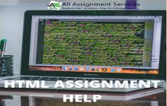

HTML Assignment Help means aid for doing the determined assignment in context to HTML. But first, this statement consists of two terms and you need to understand the meaning of HTML and Assignment respectively. So starting with what HTML means, HTML basically stands for a hypertext markup language. It is a collection of codes and symbols. this helps in constructing a web page as it consists of snippets of codes for web constructing and development.html needs CSS ( Cascading Style Sheets) and JavaScript assignment help for boosting and improving the performance of web pages. the HTML programmer has to write structured and systematic documents for text such as headings, links, tables, paragraphs, videos, quotes, images, and many other items. Further assignments initially mean a work to be done. The work or the assigned task is given to a student by the university or an employee by any organization. This task has to be completed in a given timeframe.
There are times when students search for Best HTML Assignment writing service and require getting an aid regarding the same concepts. The clearing of thoughts and getting correct answers is something that a student looks for. HTML Assignment Help Online is a key guide to help out students and reach the core of the topic and get their issues resolved. There are many ways in which these service providers aid students: